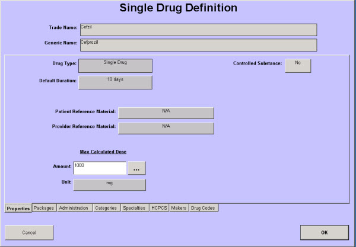

|
Description
This screen is used to configure new prescription medications for use in encounterPRO. The various tabs on this screen allow the user configuring to:
- Set maximum daily dosage
- Select the packages needed for this medication (strength and form of drug)
- Select the administration rules for this medication
- Select the Categories and Specialties that use this medication most often
(The tabs for HCPCS, Makers, and Drug Codes are used for In-office drugs and Vaccines.)
 NOTE: Before you add a new prescription medication to the database, you should perform a thorough search of the database to confirm that it does not already exist. Search the prescription medications for your specialty as well as All Specialties to be sure the medication is not already in the database. NOTE: Before you add a new prescription medication to the database, you should perform a thorough search of the database to confirm that it does not already exist. Search the prescription medications for your specialty as well as All Specialties to be sure the medication is not already in the database.
How to Access This Screen
Access this screen by selecting the Drug button on the Configuration list from the Office View.
Screen Example

To view additional tabs for the Single Drug Configuration screen, select a link below.
 Single Drug Configuration, Packages tab Single Drug Configuration, Packages tab
Single Drug Configuration, Administration tab
Single Drug Configuration, Categories tab
Single Drug Configuration, Specialties tab
Want to Learn More?
Related Solutions
Concept: Prescription Medications
How to: Add a New Vaccine
How to: Create In-office Prescription Medications
How to: Add a New Simple Prescription Medication
How to: Configure a Prescription Medication with Irregular Dosing
How to: Add a New Prescription Medication Package
How to: Modify a Simple Prescription Medication
|